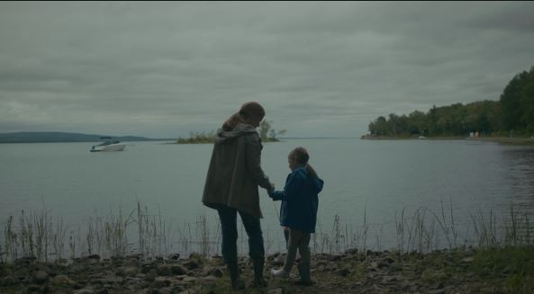

Unit 3 Essay
4/5 star

Denis Villeneuve's Arrival (2016) is a standout science-fiction film. It feels somber, intelligent and It left a deep impression on me. I think it’s a science fiction art film. "The movie begins with a montage of a life, which ends with the sad loss of a child, before introducing us to the quiet, academic world of linguist Dr. Louise Banks. This calm is broken by the arrival of twelve massive alien ships, which causes a global crisis."
One Critic Brian Tallerico calls Arrival "ambitious and moving," arguing that it's "more about grief... and compassion than it is warp speed." He believes that Amy Adams' performance grounds the film in a real human tragedy. This view is correct - the film is a beautiful and heartbreaking story about loss. But if we stop here, we'll miss the true brilliance of this film. To fully understand Arrival, I also need to understand Ted Chiang's novel, "Story of Your Life". The story delves into the Sapir-Whorf hypothesis—that the language we speak fundamentally shapes our perception of reality. In the novel, Louise not only learns words like "hello" or "human," but also fully masters the heptapod B language, a complex "semasiographic" writing language. This language is unlike ours. It is simultaneous; all meanings can be understood instantaneously. By mastering this language, Louise's consciousness also became simultaneous, allowing her to perceive the past, present, and future at the same time.
I think this is precisely what elevates the film's overall theme from simple grief to a much deeper level. The "memories" of her daughter Hannah seen from the very beginning are not flashbacks, but rather "flashforwards." Louise is not remembering her daughter's death, she is perceiving it before it happens. Therefore, the heartbreaking story is not just about a mother coping with loss. It's about a mother who, knowing the entire, beautiful, and tragic story of her daughter's life from start to finish, actively chooses to bring her into the world anyway.
Of course, a film cannot just show a character thinking about philosophy. Chiang's novella is a quiet, personal meditation, the film adds a high stakes global crisis. The twelve ships create worldwide panic, and the military, led by characters like Colonel Weber， is on a ticking clock to find out "what they want" before another nation starts a war. Of course, a film cannot just show a character thinking about philosophy. Chiang's novella is a quiet, personal meditation, the film adds a high stakes global crisis. The twelve ships create worldwide panic, and the military, led by characters like Colonel Weber， is on a ticking clock to find out "what they want" before another nation starts a war. Many external elements reflect Louise's inner tension as she tries to understand the language. I think the most cinematic scenes in the film—the arrival of the spaceship, the first appearance of the aliens in the mist and the aliens' symbols spreading across the barrier—all serve this purpose. In the film, her personal breakthrough—the very thing that allows her to understand her daughter's future—is also the key to saving the world. She uses her new, non-linear perception of time to communicate with the Chinese general and stop the conflict, proving that the Heptapod "gift" was never a weapon.
"This is where Amy Adams's performance becomes so important." Tallerico is right that she 'grounds' the film, but she does more than just that. She has to show us what it feels like for a mind to change. The external tension of the plot—the soldiers, the ticking clock, the threat of war—is what makes her feel stressed and afraid. But as she learns the language, her performance changes. Her fear turns into a strange, sad calm. The 'Hollywood plot' makes her race against time, but her quiet performance shows us she is starting to live outside of time. She makes this impossible idea—knowing the future—feel like a real, human emotion.
When I first watched this movie as a viewer, I was always confused and had many questions. After the first viewing, I understood many things about the film. But on my second viewing, one question always lingered:Why does she still choose to have Hannah, even knowing it will end in pain? I found the answer in the book, just as Chiang said in the book: that if you see the future, you aren't "trapped" by it. Instead, you see the purpose of it.
In the end, I will do 4 of 5 stars. Arrival is both a heartbreaking story of loss and a profound story of choice. Like Tallerico is right that the film is "moving," but reading Chiang’s "Story of Your Life" helps us see the true source of that emotion. The film’s only weakness, and the reason I give it 4 out of 5 stars, is that some places are a bit boring. But this is a minor flaw. Arrival's true achievement is its translation. It takes Chiang's brilliant thought experiment and turns it into a deeply felt human experience. It is a "sci-fi art film" of the highest level. It doesn't just ask us to think about a paradox; it asks us to feel the weight of Louise's choice. The film leaves such a deep impression because it argues that even knowing all the beauty and all the pain, the only answer is to say "yes" and choose it all.